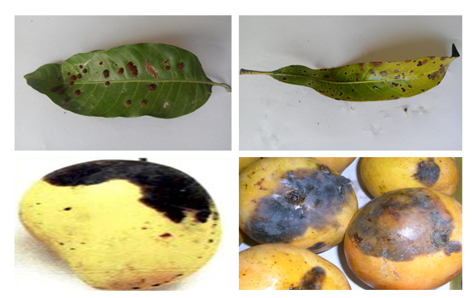
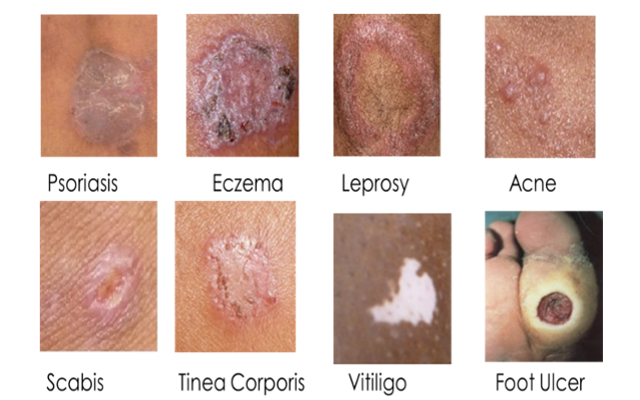

KEBOLICHHOBI. An Image Processing Based Disease Detection System.
World’s one of the toughest problems are Hunger and Extreme Poverty. According to world hunger statistics total number of people in the world who suffer from hunger and malnutrition is 800 million. Crop disease is one of the main reasons for creating this problem. Around 14% of worldwide crop production is hampered by crop disease. It is also responsible for about $220 billion worth crop loss every year, this brings hunger and creates global poverty. United Nations has set development goal to end hunger and poverty within 2015. In the year 2012 some enthusiastic computer science students of North South University, Dhaka, Bangladesh came to know about these facts and took an initiative to contribute to build a hunger and poverty free world. Then they came up with a mobile phone application called ''Beetle'' that can reduce crop damage due to various diseases. The application, captures images of affected crops, finds visual patterns of the crop disease. The patterns are matched with a huge cloud database which is constantly updated by plant disease specialists from all around the world. After detecting the disease accurately, the application will provide detailed information about the crop disease and its cure. The application has offline database and localization support so that farmers on the remotest part of the world can get help. Beetle will also suggest the farmer how much fertilizer he should apply in his green crop field using the theory of leaf color chart through taking the photo of the healthy green leaf. Not necessarily every farmer need not to have a smart phone to prevent crop production disaster. Imagine a scenario on Texas. Crop disease is responsible to crop damage in Texas worth $23 million. Texas has nearly 6000 cities. If every city has 3 smart phones with the application to prevent crop damage, nearly 3.24 million dollar will be invested in whole Texas for preventing crop production disaster. Those three phones can be operated and managed by plant disease specialist officer. If the application works correctly and farmers follow the medicine prescribed by it, no crop damage should occur. If we consider natural disasters, accidents and other unfortunate disasters in the probability, there is a chance that small percentage of crop production will be damaged. Even if we say the application would save 30% of crop damage, 7 million dollar will be saved. And the mobile buying cost is not annual. The application will be useful as long as the phone is functional.
After getting a lot of success both in Bangladesh and outside of Bangladesh the team wanted to expand this project for more plant diseases like mango, potato etc. Then A2i (Access to Information) Programme (an UNDP and USAID supported project (programme) having its office at the Prime Ministers’ Office) funded project Beetle for conducting more research on this field.
scroll down

Mango Disease Detection System
Mango is one of Bangladesh's most desireable fruits. It's sweet taste and aroma has encapsulated Bangladeshi taste senses for centuries. Hence we have built a system to help the farmers of this widely grown fruit for better production.
more details

Skin Disease Detection System
Due to poor economy, most of the skin problems of Bangladeshies remain untreated as they just ignore all sorts of sympotms and are very reluctant to visit doctors. Thus we built this system to capture any diseases on skin by images which would be accurate and cheap.
more details
Rice Disease Detection System
Rice is the staple food of Bangladesh. Due to its importance and value many researche work have been done for better rice production. But we are the fisrt to built an image processing based disease detection system.
more details